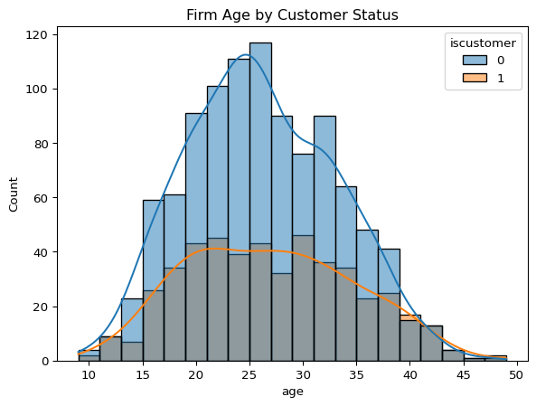
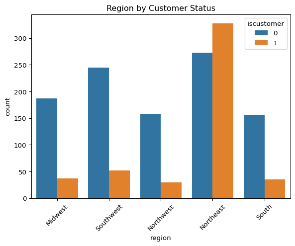

Blueprinty is a small firm that makes software for developing blueprints specifically for submitting patent applications to the US patent office. Their marketing team would like to make the claim that patent applicants using Blueprinty’s software are more successful in getting their patent applications approved. Ideal data to study such an effect might include the success rate of patent applications before using Blueprinty’s software and after using it. Unfortunately, such data is not available.
However, Blueprinty has collected data on 1,500 mature (non-startup) engineering firms. The data include each firm’s number of patents awarded over the last 5 years, regional location, age since incorporation, and whether or not the firm uses Blueprinty’s software. The marketing team would like to use this data to make the claim that firms using Blueprinty’s software are more successful in getting their patent applications approved.
Data
import pandas as pdimport seaborn as snsimport matplotlib.pyplot as plt# Load Blueprinty datadf = pd.read_csv("blueprinty.csv")# Histogram of number of patents by customer statussns.histplot(data=df, x="patents", hue="iscustomer", kde=True, bins=20)plt.title("Number of Patents by Customer Status")plt.show()# Compare mean number of patentsprint(df.groupby("iscustomer")["patents"].mean())
The histogram shows that both customers and non-customers of Blueprinty have similar distributions centered around 2 to 4 patents. However, customers tend to have a slightly wider spread and a longer right tail, indicating that some of them have more patents than non-customers. This suggests that firms using Blueprinty’s software may be more likely to have higher numbers of patents, supporting the marketing team’s claim.
Blueprinty customers are not selected at random. It may be important to account for systematic differences in the age and regional location of customers vs non-customers.
# Count of regions by customer statusprint(df.groupby("iscustomer")["region"].value_counts())# Compare average age by customer statusprint(df.groupby("iscustomer")["age"].mean())
# Histogram for ageimport seaborn as snsimport matplotlib.pyplot as pltsns.histplot(data=df, x="age", hue="iscustomer", bins=20, kde=True)plt.title("Firm Age by Customer Status")plt.show()

# Bar chart for region distributionsns.countplot(data=df, x="region", hue="iscustomer")plt.title("Region by Customer Status")plt.xticks(rotation=45)plt.show()

From the output, we can see that Blueprinty customers are not evenly distributed across regions. A large majority of customers come from the Northeast, while regions like the Southwest, Midwest, South, and Northwest have far fewer customers compared to non-customers. This suggests a strong regional skew in customer distribution. Additionally, the average age of customer firms (26.9 years) is slightly higher than that of non-customers (26.1 years), indicating that Blueprinty customers may be somewhat more established. These differences suggest that region and age could be confounding factors and should be accounted for in the analysis.
Estimation of Simple Poisson Model
Since our outcome variable of interest can only be small integer values per a set unit of time, we can use a Poisson density to model the number of patents awarded to each engineering firm over the last 5 years. We start by estimating a simple Poisson model via Maximum Likelihood.
We now define the log-likelihood function for the Poisson model, which takes a scalar () and a vector of observed counts (Y):
import numpy as npfrom scipy.special import gammalndef poisson_log_likelihood(lmbda, y):""" Log-likelihood for Poisson distribution. Parameters: lmbda: scalar lambda value y: array or list of observed counts Returns: total log-likelihood as a float """ y = np.array(y)return np.sum(-lmbda + y * np.log(lmbda) - gammaln(y +1))import matplotlib.pyplot as plt# Observed patent countsy_obs = df["patents"].values# Range of lambda valueslambda_vals = np.linspace(0.1, 20, 200)loglikelihoods = [poisson_log_likelihood(lmbda, y_obs) for lmbda in lambda_vals]# Plottingplt.figure(figsize=(8, 5))plt.plot(lambda_vals, loglikelihoods)plt.xlabel("Lambda (λ)")plt.ylabel("Log-Likelihood")plt.title("Log-Likelihood of Poisson Model Across Lambda Values")plt.grid(True)plt.show()lambda_mle_analytical = np.mean(y_obs)lambda_mle_analyticalfrom scipy.optimize import minimize# We minimize the negative log-likelihoodneg_log_likelihood =lambda lmbda: -poisson_log_likelihood(lmbda[0], y_obs)# Start from an initial guess, e.g., lambda = 1result = minimize(neg_log_likelihood, x0=[1], bounds=[(0.01, None)])lambda_mle_numerical = result.x[0]lambda_mle_numericalprint(f"Analytical MLE (mean of Y): {lambda_mle_analytical:.4f}")print(f"Numerical MLE (via optimization): {lambda_mle_numerical:.4f}")
Next, we extend our simple Poisson model to a Poisson Regression Model such that \(Y_i = \text{Poisson}(\lambda_i)\) where \(\lambda_i = \exp(X_i'\beta)\). The interpretation is that the success rate of patent awards is not constant across all firms (\(\lambda\)) but rather is a function of firm characteristics \(X_i\). Specifically, we will use the covariates age, age squared, region, and whether the firm is a customer of Blueprinty.
We now define the Poisson regression log-likelihood function, where the expected number of patents (_i) is modeled as a function of firm characteristics:
import numpy as npfrom scipy.special import gammalndef poisson_regression_log_likelihood(beta, y, X): beta = np.asarray(beta, dtype=np.float64) X = np.asarray(X, dtype=np.float64) y = np.asarray(y, dtype=np.float64)# Compute linear predictor linear_predictor = X @ beta# Prevent overflow in exp linear_predictor = np.clip(linear_predictor, -300, 50) lambda_i = np.exp(linear_predictor)return np.sum(-lambda_i + y * np.log(lambda_i) - gammaln(y +1))
We now estimate the Poisson regression model via maximum likelihood and compare it to the built-in GLM function.
import warningswarnings.filterwarnings("ignore", category=RuntimeWarning)import numpy as npimport pandas as pdfrom scipy.special import gammalnfrom scipy.optimize import minimizeimport statsmodels.api as sm# 1. Feature engineeringdf["age_sq"] = df["age"] **2region_dummies = pd.get_dummies(df["region"], drop_first=True)# 2. Build design matrix XX = pd.concat([ pd.Series(1, index=df.index, name="intercept"), df[["age", "age_sq"]], region_dummies, df[["iscustomer"]]], axis=1)y = df["patents"]# Convert to NumPy arrays with explicit dtypeX_np = X.to_numpy(dtype=np.float64)y_np = y.to_numpy(dtype=np.float64)# 3. Define Poisson regression log-likelihooddef poisson_regression_log_likelihood(beta, y, X): beta = np.asarray(beta, dtype=np.float64) X = np.asarray(X, dtype=np.float64) y = np.asarray(y, dtype=np.float64)# Compute λ = exp(Xβ) linear_predictor = X @ beta lambda_i = np.exp(linear_predictor)return np.sum(-lambda_i + y * np.log(lambda_i) - gammaln(y +1))# 4. Minimize the negative log-likelihooddef neg_log_likelihood(beta):return-poisson_regression_log_likelihood(beta, y_np, X_np)init_beta = np.zeros(X_np.shape[1])result = minimize(neg_log_likelihood, init_beta, method="BFGS")# 5. Extract coefficients and standard errorsbeta_hat = result.xhessian_inv = result.hess_invstd_errors = np.sqrt(np.diag(hessian_inv))# 6. Output results as a tableresults_df = pd.DataFrame({"Variable": X.columns,"Coefficient": beta_hat,"Std. Error": std_errors})print(results_df)
We now check the results using Python’s built-in statsmodels.GLM function:
import statsmodels.api as sm# Ensure all inputs are numericX_clean = X.astype(float)y_clean = y.astype(float)# Fit Poisson GLMglm_model = sm.GLM(y_clean, X_clean, family=sm.families.Poisson())glm_results = glm_model.fit()# Show summaryprint(glm_results.summary())
The Poisson regression results from statsmodels.GLM show that being a Blueprinty customer is associated with a 23% increase in expected patent counts (exp(0.2076)≈1.23, and this effect is statistically significant (𝑝<0.001). Age has a positive effect while age squared has a negative effect, suggesting diminishing returns to firm age. Regional effects are small and not statistically significant. Overall, the model suggests that Blueprinty customers tend to have more patents, even after accounting for firm age and region.
We now estimate the average increase in predicted patent counts if every firm were a Blueprinty customer versus if none were, using our fitted GLM model:
X_0 = X.copy()X_0["iscustomer"] =0X_0 = X_0.astype(float)X_1 = X.copy()X_1["iscustomer"] =1X_1 = X_1.astype(float)# Predict with GLMy_pred_0 = glm_results.predict(X_0)y_pred_1 = glm_results.predict(X_1)# Average difference in predicted patentsavg_difference = np.mean(y_pred_1 - y_pred_0)print(f"Average predicted increase in patents if every firm used Blueprinty: {avg_difference:.3f}")
Average predicted increase in patents if every firm used Blueprinty: 0.793
AirBnB Case Study
Introduction
AirBnB is a popular platform for booking short-term rentals. In March 2017, students Annika Awad, Evan Lebo, and Anna Linden scraped of 40,000 Airbnb listings from New York City. The data include the following variables:
Variable Definitions
- `id` = unique ID number for each unit
- `last_scraped` = date when information scraped
- `host_since` = date when host first listed the unit on Airbnb
- `days` = `last_scraped` - `host_since` = number of days the unit has been listed
- `room_type` = Entire home/apt., Private room, or Shared room
- `bathrooms` = number of bathrooms
- `bedrooms` = number of bedrooms
- `price` = price per night (dollars)
- `number_of_reviews` = number of reviews for the unit on Airbnb
- `review_scores_cleanliness` = a cleanliness score from reviews (1-10)
- `review_scores_location` = a "quality of location" score from reviews (1-10)
- `review_scores_value` = a "quality of value" score from reviews (1-10)
- `instant_bookable` = "t" if instantly bookable, "f" if not
import pandas as pdimport numpy as npimport seaborn as snsimport matplotlib.pyplot as pltimport statsmodels.api as sm# Load datasetdf = pd.read_csv("airbnb.csv")# Preview datadf.head()# Drop rows with missing values in relevant fieldscols_to_use = ["number_of_reviews", "price", "bedrooms", "bathrooms", "room_type","review_scores_cleanliness", "review_scores_location", "review_scores_value","instant_bookable", "days"]df_clean = df[cols_to_use].dropna()# Convert categorical variablesdf_clean["instant_bookable"] = (df_clean["instant_bookable"] =="t").astype(int)df_clean = pd.get_dummies(df_clean, columns=["room_type"], drop_first=True)# Inspect cleaned datadf_clean.describe()# Distribution of number of reviewssns.histplot(df_clean["number_of_reviews"], bins=50)plt.title("Distribution of Number of Reviews")plt.show()# Correlation matrixsns.heatmap(df_clean.corr(), annot=True, fmt=".2f", cmap="coolwarm")plt.title("Correlation Heatmap")plt.show()# Set up design matrixy = df_clean["number_of_reviews"]X = df_clean.drop(columns=["number_of_reviews"])X = sm.add_constant(X) # add intercept# Fix data typesX = X.astype(float)y = y.astype(float)# Fit Poisson modelpoisson_model = sm.GLM(y, X, family=sm.families.Poisson())poisson_results = poisson_model.fit()# Output summaryprint(poisson_results.summary())
The Poisson regression results suggest that several listing characteristics are significantly associated with the number of Airbnb reviews, used here as a proxy for bookings. Listings that are instantly bookable receive about 41% more reviews than others (exp(0.346)≈1.41). Higher cleanliness scores are positively associated with more reviews, while surprisingly, higher location and value scores show small but significant negative associations. Each additional bedroom increases expected reviews by about 7.7%, whereas more bathrooms slightly reduce them. Listings with higher prices receive marginally fewer reviews. Finally, compared to entire homes, shared rooms receive substantially fewer reviews (−0.246, or 22% less), while private rooms have a negligible effect. Overall, model fit is strong with a pseudo-R2 of 0.684, indicating that the features included explain much of the variation in review counts.